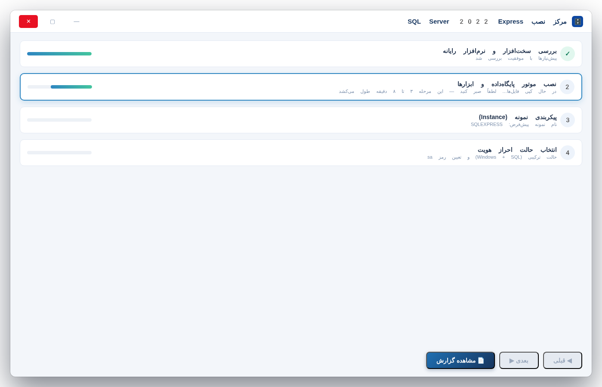
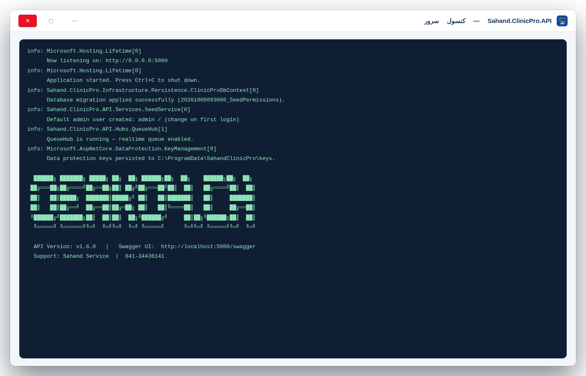

برنامه درمانگاه سهند از سه لایه ساخته شده که هرکدام کار خودش را انجام میدهند. اولین لایه SQL Server است؛ دفترچه مرکزی درمانگاه که همه اطلاعات بیمارها، نوبتها، فاکتورها و داروها در آن نوشته میشود. دومین لایه سرور برنامه (API) است؛ مثل یک منشی که بین برنامه و دفترچه وساطت میکند و مطمئن میشود هیچکس بدون اجازه چیزی نخواند یا ننویسد. لایه سوم خود نرمافزار دسکتاپ است؛ پنجرهای که کاربران با آن کار میکنند و در راهنمای کاربر با آن آشنا میشوید.
این راهنما دقیقاً یک هدف دارد: وصلکردن برنامه به SQL Server و ساختن دیتابیس در اولین نصب و اجرا. یعنی در انتهای این راهنما، دیتابیسی به نام SahandClinicProDb با حدود ۹۴ جدول آماده کار است، سرور برنامه روشن است و شما با نام کاربری اولیه وارد برنامه شدهاید. از این به بعد هر بار برنامه را باز کنید، همهچیز همینطور آماده است و دیگر لازم نیست هیچکدام از این قدمها را تکرار کنید.
۱) ترتیب قدمها مهم است: اول SQL Server را نصب میکنیم، بعد نام آن را پیدا میکنیم، بعد برنامه را با آن آشنا میکنیم، بعد دیتابیس را میسازیم و در آخر سرور و برنامه را اجرا میکنیم. اگر جا بپرید یا ترتیب را بههم بریزید، برنامه پیام خطا میدهد — اما همین راهنما دارد و جدول رفع اشکال پایین هم هست؛ چیزی از دست نمیرود.
۲) همهچیز رایگان است: نسخه SQL Server 2022 Express که در این راهنما نصب میکنیم، نسخه رایگان مایکروسافت است و برای درمانگاههای کوچک و متوسط کاملاً کافی است. نه هزینه نرمافزاری دارد و نه لایسنس جداگانه میخواهد.
۳) هیچچیز خراب نمیشود: دستوری که در قدم ۵ اجرا میکنید فقط میسازد؛ چیزی را حذف یا پاک نمیکند. اجرای دوباره آن هم بیخطر است؛ برنامه هوشمندانه میفهمد چه جدولهایی از قبل ساخته شده و فقط بقیه را میسازد.
| # | چه چیزی؟ | توضیح |
|---|---|---|
| ۱ | ویندوز ۱۰ یا ۱۱ (۶۴ بیتی) | هر نسخهای حتی Home کافی است. |
| ۲ | Visual Studio 2022 | فقط برای روش «اجرای از سورسکد». اگر هنوز نصب نکردهاید یا پروژه را باز نکردهاید، اول قدمهای ۰ تا ۳ راهنمای VS را انجام دهید. |
| ۳ | حدود ۱۰ گیگابایت فضای آزاد | خود SQL حدود ۲ گیگ و فایلهای نصب و ابزارها باقی فضای لازم. |
| ۴ | اینترنت برای دانلودها | فقط موقع دانلود SQL و SSMS لازم است؛ بعد از نصب، برنامه اینترنت برای دیتابیس نمیخواهد. |
| ۵ | دسترسی مدیر (Admin) | برای نصب نرمافزار روی ویندوز، حساب کاربری شما باید مدیر باشد. |
SQL Server را فقط روی رایانهای نصب کنید که قرار است «سرور» درمانگاه باشد. اگر فقط یک رایانه دارید، همان رایانه خودتان سرور است و هیچ مشکلی هم نیست. روی رایانههای کاربران (پذیرش و اتاقها) SQL نصب نکنید.
در مرورگر (Chrome یا Edge) این نشانی را باز کنید و دکمه Download now را بزنید:
https://www.microsoft.com/en-us/download/details.aspx?id=104781 (اگر باز نشد، در گوگل جستجو کنید: SQL Server 2022 Express download)
فایل دانلودشده معمولاً به نام SQLServer2022-SSEI-Expr.exe است. روی آن دوبار کلیک کنید. اگر پنجره «User Account Control» پرسید اجازه تغییر بدهم؟، روی Yes کلیک کنید.
روی Accept و بعد Install کلیک کنید و صبر کنید. در این مرحله چند چای بخورید ☕ — نصب ۵ تا ۱۵ دقیقه طول میکشد و نوار پیشرفت خودش جلو میرود.
وقتی نصب تمام شد، صفحهای مثل تصویر زیر میبینید. این صفحه یک نکته طلایی دارد: در بخش Connection string جلوی Data Source= نوشته شده است. این همان «نشانی» SQL شماست — معمولاً localhost\SQLEXPRESS. آن را یادداشت کنید (یا از همین صفحه عکس بگیرید)؛ در قدم ۲ و ۴ به آن نیاز داریم.

localhost بماند، هنگام نصب بهجای Basic گزینه Custom را بزنید و در مرحله Database Engine Configuration نوع نصب Default instance را انتخاب کنید. برای بقیه ما، همان Basic با نام SQLEXPRESS کاملاً مناسب است.هر SQL Server هنگام نصب یک «نام نمونه» میگیرد — مثل شماره اتاق در یک ساختمان. بیشترین خطاهایی که کاربران تازهکار میبینند بهخاطر اشتباه در همین نام است؛ پس این قدم کوتاه را با دقت انجام دهید تا بقیه راه هموار باشد.
اگر در قدم ۱ مقدار جلوی Data Source= را یادداشت کردهاید، همین حالا آن را دارید و کافی است. اگر نه، سادهترین راه این است:
از منوی Start تایپ کنید services.msc و Enter بزنید. پنجره Services باز میشود.
در فهرست، سرویسی پیدا کنید که نامش با SQL Server شروع میشود و کنارش داخل پرانتز یک نام دارد — مثلاً SQL Server (SQLEXPRESS). همان نام داخل پرانتز، نام نمونه شماست.
مطمئن شوید «Status» این سرویس Running است. اگر نبود، روی آن راستکلیک و Start بزنید.
حالا بسته به آنچه دیدید، «نشانی SQL شما» یکی از این دو حالت است:
| نام سرویس در پنجره Services | یعنی چه؟ | در رشته اتصال چه بنویسیم؟ (قدم ۴) |
|---|---|---|
| SQL Server (SQLEXPRESS) | نصب Express با نام پیشفرض — رایجترین حالت | localhost\SQLEXPRESS |
| SQL Server (MSSQLSERVER) | نمونه بینام (Default instance) | فقط localhost |
SSMS (SQL Server Management Studio) برنامه رایگان مایکروسافت برای «دیدن داخل» SQL Server است — مثل پنجرهای به دفترچه مرکزی. با آن میتوانید مطمئن شوید SQL سالم است و بعداً در قدم ۵ ساختهشدن جدولها را با چشم خودتان ببینید.
از نشانی کوتاه مایکروسافت دانلودش کنید (یا در گوگل جستجو کنید: SSMS download):
https://aka.ms/ssmsfullsetup
نصبکننده را اجرا کنید (اگر اجازه خواست، Yes)، روی Install کلیک کنید و تا پایان صبر کنید؛ ممکن است چند دقیقه طول بکشد و در پایان بخواهد رایانه Restart شود — انجام دهید.
SSMS را از منوی Start باز کنید. در پنجره Connect to Server این مقادیر را بگذارید:
| فیلد | چه بنویسیم؟ |
|---|---|
| Server name | نشانی SQL از قدم ۲ — مثلاً localhost\SQLEXPRESS |
| Authentication | Windows Authentication (پیشفرض) |
| User name / Password | خالی میماند — ویندوز خودش شما را میشناسد |
و روی Connect کلیک کنید.
برنامه نمیتواند حدس بزند SQL شما کجاست و چه نامی دارد؛ باید به آن بگوییم. این آشنایی در فایلی به نام appsettings.json داخل پروژه سرور برنامه (API) انجام میشود. فقط یک خط از این فایل برای ما مهم است: خطی که با DefaultConnection شروع میشود — همان «رشته اتصال».
در ویژوال استودیو، پنجره Solution Explorer (سمت راست) را باز کنید؛ پروژه Sahand.ClinicPro.API را پیدا کنید و آن را باز کنید تا فایلهایش دیده شوند. روی فایل appsettings.json دوبار کلیک کنید تا باز شود.
خط DefaultConnection را پیدا کنید (بالاهای فایل، داخل بخش ConnectionStrings). حالا بسته به حالت شما یکی از این دو نمونه را جایگزین مقدار فعلی کنید:
حالت الف — نمونه بینام (نصب Custom با Default instance، یا SQL از قبل موجود روی همین رایانه):
"DefaultConnection": "Server=localhost;Database=SahandClinicProDb;Trusted_Connection=True;TrustServerCertificate=True;MultipleActiveResultSets=true"
حالت ب — نمونه نامدار SQLEXPRESS (نصب Basic — رایجترین حالت):
"DefaultConnection": "Server=localhost\\SQLEXPRESS;Database=SahandClinicProDb;Trusted_Connection=True;TrustServerCertificate=True;MultipleActiveResultSets=true"
\ باید دو تا \\ پشتسرهم بنویسید (همانطور که در حالت ب میبینید). اگر فقط یکی بگذارید، فایل خراب میشود و سرور با پیام خطای JSON بالا نمیآید. عیناً از همین کادرها کپی کنید تا این مشکل هرگز برایتان پیش نیاید.با Ctrl+S ذخیره کنید. تمام! بقیه فایل دست نخورده بماند.
Server=... همان خط را عوض میکنید. رشتههای کامل داخل این راهنما فقط برای مقایسه و مرجعاند — اگر موقع کپی از PDF در چند خط شکسته شدند، در فایل باید در یک خط قرار بگیرند؛ پس بهجای کپی، همان خط موجود فایل را ویرایش کنید.| قطعه | یعنی چه؟ |
|---|---|
| Server=localhost\SQLEXPRESS | نشانی و نام نمونه SQL — همان که در قدم ۲ پیدا کردید. |
| Database=SahandClinicProDb | نام دیتابیسی که برنامه میسازد و استفاده میکند؛ آن را عوض نکنید. |
| Trusted_Connection=True | ورود با حساب ویندوز خودتان (بدون رمز SQL) — سادهترین و امنترین روش برای تکرایانه. |
| User Id=... ; Password=... | فقط در حالت «احراز هویت SQL» — به بخش حالتهای پیشرفته (الف) مراجعه کنید. |
| TrustServerCertificate=True | اجازه اتصال با گواهی پیشفرض خود SQL — بدون این عبارت، ویندوز اتصال را بهخاطر «اعتماد نداشتن به گواهی» قطع میکند. |
| MultipleActiveResultSets=true | اجازه میدهد برنامه همزمان چند بسته اطلاعات از دیتابیس بخواند — برای سرعت بیشتر. |
درون پروژه، سازندگان برنامه «مهاجرتها» (Migrations) را از قبل نوشتهاند؛ یعنی نقشههای کامل ساخت حدود ۹۴ جدول — از پرونده بیمار تا نسخه و فاکتور. ما فقط باید یک دستور اجرا کنیم تا برنامه نقشهها را به SQL بدهد و همهچیز ساخته شود. این دستور حتی خودِ دیتابیس SahandClinicProDb را هم اگر نباشد، میسازد.
در ویژوال استودیو از منوی بالا بروید به: Tools ← Command Line ← Developer PowerShell. یک پنجره سیاه کوچک پایین صفحه باز میشود که دستورهای آن شناخته میشوند.
ابتدا وارد پوشه پروژه سرور (API) شوید — پوشهای که فایل Sahand.ClinicPro.API.csproj در آن است. اگر پوشه پروژه را در مسیر پیشفرض باز کردهاید، این دستور همین کار را میکند (اگر مسیر شما فرق دارد، جایگزینش کنید):
cd D:\SahandClinicPro\src\Sahand.ClinicPro.API
بار اول فقط، ابزار ساخت دیتابیس را بازیابی کنید (یکبار برای همیشه — دفعه بعد این مرحله را ندارید). سازندگان برنامه نسخه درستِ این ابزار را از قبل داخل خودِ فایلهای پروژه گنجاندهاند؛ دستور زیر همان نسخه را از اینترنت برداشته و همینجا آماده میکند (حدود یک دقیقه):
dotnet tool restore
چند خط نوشته ظاهر میشود و آرام میگیرد؛ تا کلمه error در قرمز ندیدید، یعنی آماده است و میتوانید بروید سراغ مرحله بعد.
حالا دستور اصلی ساخت دیتابیس را اجرا کنید — عیناً همین یک خط را کپی کنید و Enter بزنید:
dotnet ef database update -p ../Sahand.ClinicPro.Infrastructure -s .
در این دستور، -p یعنی «پروژه دیتابیس»، -s یعنی «پروژه راهانداز» و نقطه در انتها یعنی «همین پوشه فعلی» — چون در پوشه API هستید، همین کافی است.
در SSMS روی شاخه Databases راستکلیک و Refresh بزنید. حالا دیتابیس SahandClinicProDb را در فهرست میبینید.
روی مثلث کنار آن بزنید: Tables ← — فهرستی بلند از جدولها (حدود ۹۴ مورد) را میبینید، از Patients و Appointments گرفته تا جدول تاریخچهای به نام __EFMigrationsHistory که ثبت نقشههای اجراشده را نگه میدارد.
Login failed گرفتید، جدول رفع اشکال ۱ ردیف دوم را ببینید.حالا که انبار آماده است، سرور برنامه را روشن میکنیم. سرور (API) همان منشی وساطتگر است که برنامه دسکتاپ از طریق آن با دیتابیس حرف میزند.
در Solution Explorer روی پروژه Sahand.ClinicPro.API راستکلیک کنید: Debug ← Start new instance. (راهنمای VS همین کار را برای پروژه دسکتاپ هم توضیح داده — هر دو میتوانند همزمان اجرا باشند.)
یک پنجره کنسول باز میشود و چند خط نوشته ظاهر میشود. دنبال این جمله بگردید:
Now listening on: http://localhost:5000
دیدید این جمله را؟ یعنی سرور با موفقیت روشن شد. اگر به جای عدد 5000 عدد دیگری دیدید (مثلا 2127) هنوز نگران نباشید — جعبه «اگر پورت 5000 نبود» کمی پایینتر در همین قدم را ببینید. در همین لحظات اول، سرور چند «بذرافشان» را هم خودکار اجرا میکند: نقشها و دسترسیها را میسازد، کاربر مدیر اولیه را ثبت میکند و دادههای پایه برنامه را آماده میکند — پس چند ثانیه صبر کنید تا خطوط لاگ آرام بگیرند.

http://localhost:5000/health را باز کنید — باید پیام سبز «سامانه درمانگاه سهند فعال است» ببینید. این همان نقطهای است که خود برنامه هم سلامت سرور را با آن میسنجد./health (همان تست سلامت بالا) و /swagger (فهرست تصویری همه امکانات سرور — مستندات زنده API؛ فقط وقتی از ویژوال استودیو اجرا شده فعال است).https://localhost:2127/swagger)؛ (۲) مهمتر: برنامه دسکتاپ به نشانی ثابت http://localhost:5000/api/v1 وصل میشود و تا سرور روی 5000 نباشد، «اتصال به سرور برقرار نشد» میگوید. راه حل یکبار برای همیشه: در مسیر src/Sahand.ClinicPro.API/Properties (پوشه Properties را اگر نبود، در همان پوشه پروژه API بسازید) فایلی به نام launchSettings.json بسازید، این متن را داخلش بگذارید و ذخیره کنید؛ بعد پنجره سرور را ببندید و سرور را دوباره اجرا کنید — از این به بعد همیشه روی 5000 بالا میآید و مرورگر هم مستقیم صفحه swagger را باز میکند (در نسخه ۲.۰.۲ به بعد همین فایل خودش داخل سورس است و این کار لازم نیست):
{
"profiles": {
"http": {
"commandName": "Project",
"launchBrowser": true,
"launchUrl": "swagger",
"applicationUrl": "http://localhost:5000",
"environmentVariables": {
"ASPNETCORE_ENVIRONMENT": "Development"
}
}
}
}در Solution Explorer روی پروژه Sahand.ClinicPro.Desktop راستکلیک و Set as Startup Project بزنید (نام پروژه ضخیم میشود). حالا دکمه سبز ▶ یا کلید F5 را بزنید.
پنجره ورود برنامه باز میشود. با این مشخصات وارد شوید:
| فیلد | مقدار اولیه |
|---|---|
| نام کاربری | admin |
| رمز عبور | Admin@123 |

برنامه بلافاصله از شما تغییر رمز میخواهد (این یک قانون امنیتی است و دورزدنی ندارد). یک رمز جدید قوی بگذارید — ترکیبی از حرف بزرگ و کوچک، عدد و علامت، حداقل ۸ کاراکتر — و آن را در جای مطمئنی یادداشت کنید؛ این رمز، کلید ورود مدیر کل درمانگاه است.
این جدول مخصوص خطاهایی است که موقع قدم ۳ (تست SSMS)، قدم ۵ (دستور ساخت دیتابیس) یا بالا آمدن سرور ممکن است ببینید. پیامهای واقعی SQL معمولاً طولانیاند؛ اینجا فقط بخش شناسنامهایشان آمده — با همین بخش میتوانید ردیف مربوطه را پیدا کنید.
| پیام خطا (بخش اصلی) | یعنی چه؟ | خودم چه کنم؟ |
|---|---|---|
| A network-related or instance-specific error... (error: 26) | نشانی یا نام نمونه درست نیست؛ یا سرویس SQL خاموش است | قدم ۲ را دوباره بروید و نام داخل پرانتز سرویس را دقیق بنویسید (یادتان باشد در JSON دو \\). بعد services.msc → سرویس SQL Server → راستکلیک → Start |
| Login failed for user 'DOMAIN\karbar' | حساب ویندوزی فعلی شما، مدیر SQL شناخته نمیشود | دستور قدم ۵ را با همان حسابی که SQL را نصب کردهاید اجرا کنید؛ یا در SSMS از مسیر Security ← Logins ← New Login حساب خودتان را با نقش سرور sysadmin اضافه کنید |
| Login failed for user 'sa' | در حال اتصال با کاربر و رمز SQL هستید ولی یا رمز اشتباه است یا نصب SQL اجازه ورود رمزدار ندارد (Mixed Method خاموش) | اگر واقعاً احراز هویت SQL میخواهید → بخش حالتهای پیشرفته (الف). پیشفرض این راهنما بدون sa کار میکند |
| CREATE DATABASE permission denied | کاربر فعلی اجازه ساخت دیتابیس ندارد | با حساب نصبکننده SQL (مدیر) وارد شده و دستور قدم ۵ را دوباره بزنید |
| The certificate chain was issued by an authority that is not trusted | عبارت TrustServerCertificate=True در رشته اتصال جا افتاده | نمونه کامل قدم ۴ را عیناً کپی کنید و ذخیره کنید |
| Cannot open database "SahandClinicProDb" requested by the login | اتصال به SQL موفق بوده ولی دیتابیس هنوز وجود ندارد | قدم ۵ را اجرا کنید — همان دستور دیتابیس را میسازد |
| Run "dotnet tool restore" to make the "dotnet-ef" command available | ابزار ساخت دیتابیسِ همراه خود پروژه هنوز بازیابی نشده است (مرحله ۳ قدم ۵ جا افتاده است) | در همان پنجره دستور dotnet tool restore را بزنید و بعد دستور اصلی مرحله ۴ را دوباره اجرا کنید |
| No executable found matching command "dotnet-ef" | ابزار هنوز بازیابی نشده، یا دستور را از پوشه بیرون پروژه زدهاید | مطمئن شوید داخل پوشه پروژه هستید (قدم ۵ مرحله ۲) و دستور مرحله ۳ همانجا را بزنید؛ اگر باز هم شناخته نشد پنجره PowerShell را ببندید و یکی تازه باز کنید |
| Unknown object type 'SEQUENCE' used in a CREATE, DROP, or ALTER statement | رشته اتصال شما به یک SQL Server قدیمیتر از ۲۰۱۲ وصل شده است — معمولاً یک SQL 2008/2008R2 که از قبل روی ویندوز بوده و در قدم ۲ بهاشتباه انتخاب شده. این برنامه برای شمارهگذاری پرونده بیمار و فاکتورها به قابلیت Sequence نیاز دارد که فقط از نسخه ۲۰۱۲ به بعد در SQL وجود دارد (نشانه دیگر: خطاهای زرد «TLS 1.0» همان لحظه) | قدم ۲ را با دقت دوباره بروید و مطابق توضیح همان قدم نسخه نمونهها را مقایسه کنید؛ بعد Server= را در قدم ۴ به نمونه نسخه ۱۶ (۲۰۲۲) تغییر دهید و دستور قدم ۵ را دوباره بزنید. اگر روی ویندوزتان هیچ SQL 2022 نیست → قدم ۱ (نصب Express) را کامل کنید. اگر بعد از این خطا در SSMS به نمونه قدیمی وصل شدید و دیتابیس نیمهکاره SahandClinicProDb دیدید، بیخطر است؛ راستکلیک ← Delete حذفش کنید |
| Incorrect WHERE clause for filtered index 'IX_PharmacyInventory_Quantity' (Error 10735) | یک اشتباه کوچک در خود نسخه ۲.۰.۱ سورس است (نه کار شما!) — دستور ساخت یک ایندکس داروخانه، دو ستون را با هم مقایسه میکرد که SQL Server در این نوع ایندکس قبول نمیکند | در سورس مخزن گیتهاب رفع شده است. راه سریع بدون دانلود دوباره: فایل Migrations/20261004205244_InitialCreate.cs را در پوشه Infrastructure باز کنید، عبارت IX_PharmacyInventory_Quantity را جستوجو کنید و در خط filter: فقط بنویسید filter: "[IsDeleted] = 0"); — ذخیره کنید و دستور قدم ۵ را دوباره بزنید (اجرای ناموفق قبلی بهطور خودکار کامل پس گرفته شده و دیتابیس برای اجرای دوباره پاک است) |
| HostAbortedException / «خطای مهلک در راهاندازی API» وسط دستور قدم ۵ | هیچ! اشتباهی رخ نداده — ابزار ساخت دیتابیس هاست را عمداً روشن و خاموش میکند و برنامه آن را بهاشتباه پرچم خطا میکند | ادامه خروجی را ببینید: اگر بعدش «Done.» آمد همهچیز درست بوده؛ اگر خطای واقعی آمد (Error Number دارد)، ردیف مربوطه همین جدول را ببینید |
| MSB1009 / Build failed (هنگام دستور قدم ۵) | پروژه هنوز بهطور تمیز کامپایل نشده | اول در ویژوال استودیو: Build ← Rebuild Solution تا «0 Error» شود (راهنمای VS قدم ۳)؛ بعد دستور را دوباره بزنید |
این جدول برای بعد از قدم ۵ است؛ یعنی موقع اجرای سرور و اولین ورود به برنامه.
| مشکل | یعنی چه؟ | خودم چه کنم؟ |
|---|---|---|
| هنگام اجرای سرور، مرورگر خودش صفحه 404 باز کرد (نشانیاش مثل https://localhost:2127/ بود) | هیچ خطایی رخ نداده! سرور API صفحه خانگی ندارد و آدرس خالی همیشه 404 میدهد؛ پورت غیر 5000 هم یعنی ویژوال استودیو پورت تصادفی ساخته (نقص نسخه ۲.۰.۱ سورس) | با همان پورت /health یا /swagger را باز کنید تا زنده بودن سرور را ببینید؛ بعد جعبه «اگر پورت 5000 نبود» در قدم ۶ را اجرا کنید تا سرور روی پورت ثابت 5000 بالا بیاید — آنوقت برنامه دسکتاپ وصل میشود |
| برنامه میگوید «اتصال به سرور برقرار نشد» | سرور API اجرا نیست یا خاموش شده — یا روی پورت دیگری (غیر 5000) بالا آمده | قدم ۶ را اجرا کنید؛ بعد در مرورگر http://localhost:5000/health را باز کنید — پیام سبز یعنی سرور سالم است و مشکل جای دیگر است؛ اگر سرور روشن است و پیام سبز را میدهید ولی برنامه باز هم وصل نمیشود → سرور باید دقیقا روی پورت 5000 باشد: جعبه «اگر پورت 5000 نبود» در قدم ۶ |
| پنجره کنسول API سریع بسته میشود و خطا را نمیتوانم بخوانم | سرور در همان ثانیههای اول به خطا خورده | از پنجره Developer PowerShell (قدم ۵) و از پوشه اصلی پروژه اجرا کنید: dotnet run --project src/Sahand.ClinicPro.API — کنسول باز میماند و خطا را میبینید؛ معمولاً مشکل از رشته اتصال است (جدول بالا) |
| Failed to bind to address http://localhost:5000: address already in use | یک نمونه دیگر از سرور از قبل روشن است | فقط یک نمونه کافی است: پنجره کنسول قبلی را ببندید یا در Task Manager برنامههای Sahand.ClinicPro.API را End task کنید و دوباره اجرا کنید |
| ورود admin ناموفق است: «نام کاربری یا رمز عبور نامعتبر» | یا بذرها هنوز اجرا نشدهاند، یا رمز را قبلاً عوض کردهاید و رمز جدید درست نیست | کنسول سرور را نگاه کنید؛ اگر موقع روشنشدن خطای دیتابیس داشت → جدول رفع اشکال ۱. اگر دیتابیس تازه ساخته شده → رمز اولیه Admin@123 است |
| روی رایانه دیگرِ شبکه به این سرور وصل نمیشود | نشانی سرور در فایل پیکربندی برنامه همان رایانه، هنوز localhost است | در فایل appsettings.json برنامه دسکتاپ همان رایانه، مقدار BaseUrl را به نشانی سرور تغییر دهید (مثل http://192.168.1.10:5000/api/v1) + بازکردن پورت ۵۰۰۰ در فایروال سرور — شرح کامل در راهنمای نصب قدم ۵ |
| بعد از تغییر appsettings تغییری نمیبینم | تنظیمها فقط موقع روشنشدن خوانده میشوند | هم سرور API و هم برنامه را کامل ببندید و دوباره باز کنید |
| خطای قرمز XAML موقع اجرای برنامه دسکتاپ | سورستان مربوط به نسخه قدیمی ۲.۰.۰ است | این خطا در نسخه ۲.۰.۱ رفع شده — سورس را از رلیز v2.0.1 به بالا دانلود کنید (دکمه Source code در صفحه رلیز گیتهاب) |
| ویژوال استودیو پروژهها را نمیشناسد / نوار INCOMPATIBLE | NET 8 SDK. روی سیستم نصب نیست | قدم ۰ راهنمای VS — نصب NET 8 SDK. و باز کردن دوباره ویژوال استودیو |
این بخش برای موقعیتهای خاص است؛ اگر مسیر اصلی این راهنما را رفتهاید، به هیچکدام از اینها نیازی ندارید و میتوانید مستقیم به چکلیست نهایی بروید.
گاهی برنامه باید با یک کاربر رمزدار به SQL وصل شود — مثلاً وقتی ویندوز درمانگاه دامین دارد یا نصبکننده SQL و کاربر روزمره یکی نیستند. برای این کار باید هنگام نصب SQL گزینه Custom را انتخاب کنید و در مرحله «Database Engine Configuration» حالت احراز هویت را روی Mixed Mode بگذارید و برای کاربر sa یک رمز قوی تعیین کنید (حروف بزرگ و کوچک + عدد + علامت، حداقل ۸ کاراکتر — ویندوز اجازه رمز ساده نمیدهد). آنوقت رشته اتصال چنین شکلی میگیرد:
"DefaultConnection": "Server=localhost\\SQLEXPRESS;Database=SahandClinicProDb;User Id=sa;Password=رمز-شما;TrustServerCertificate=True;MultipleActiveResultSets=true"
منطق کار همان است که یاد گرفتید؛ فقط دو تفاوت کوچک دارد: اولاً SQL و سرور برنامه روی رایانه مرکزی (سرور) میمانند و روی رایانههای کاربران فقط برنامه دسکتاپ نصب میشود. ثانیاً در فایل پیکربندی برنامه هر کلاینت، مقدار BaseUrl بهجای localhost نشانی IP رایانه سرور میشود (مثل http://192.168.1.10:5000/api/v1) و در فایروال سرور پورتهای ۵۰۰۰ و ۱۴۳۳ باز میشوند. تمام این کارها با تصویر و قدمبهقدم در «راهنمای قدمبهقدم نصب و راهاندازی» (Install-Guide) آمده است — همین راهنما را به مسئول شبکه بدهید.
اجرای از ویژوال استودیو برای یادگیری و تست عالی است؛ اما برای کار روزمره درمانگاه، سرور باید بدون برنامهنویس روشن بماند. بسته نصب پروژه (پوشه installer مخزن) این را خودکار میکند: فایل INSTALL-SERVER.bat روی رایانه سرور، همهچیز را منتشر میکند، همان دستور ساخت دیتابیس قدم ۵ را اجرا میکند و سرور را بهصورت «سرویس ویندوز» ثبت میکند تا با هر روشنشدن رایانه خودکار بالا بیاید. برای این حالت فقط دو نکته اضافه دارد: اول اینکه فایل appsettings.json موردنظر دیگر کنار سورس نیست، بلکه کنار فایلهای منتشرشده سرور است (مثلاً C:\SahandClinicPro\Server\appsettings.json). دوم اینکه در محیط تولید، عوضکردن کلید امضای Jwt:SecretKey به یک مقدار تصادفی حداقل ۶۴ کاراکتری الزامی است — راهنمای کامل استقرار (فایل deployment در مخزن) دستور ساخت این کلید را دارد.
| ✓ | بررسی | چطور مطمئن شوم؟ |
|---|---|---|
| ☐ | SQL نصب و روشن است | در services.msc سرویس SQL Server وضعیت Running دارد |
| ☐ | SSMS وصل میشود | Connect با نام نمونه (قدم ۲) بدون خطا انجام میشود |
| ☐ | رشته اتصال درست است | در appsettings.json پروژه API، مقدار Server دقیقاً همان نام نمونه شماست (با دو \\ در JSON) |
| ☐ | دیتابیس ساخته شده | در SSMS دیتابیس SahandClinicProDb با حدود ۹۴ جدول دیده میشود |
| ☐ | سرور برنامه روشن است | کنسول API مینویسد Now listening on و http://localhost:5000/health پیام سبز میدهد |
| ☐ | اولین ورود موفق بود | با admin وارد شدید و برنامه داشبورد را نشان داد |
| ☐ | رمز مدیر عوض شد | رمز جدید در جای امن (دفترچه قفل یا نرمافزار رمز عبور) یادداشت شد |
| ☐ | پشتیبانگیری در برنامه پلان است | هرچند امروز زود است، قرار شد طبق راهنمای نصب، پشتیبان خودکار شبانه فعال شود — اطلاعات بیماران بیبازگشت است |
اگر جای ماندهای از این راهنما گیر کردید، پیش از تماس این چهار چیز را آماده کنید تا پاسخ چند برابر سریعتر بگیرید: ① یک عکس واضح از پیام خطا ② شماره قدمی که در آن گیر کردهاید ③ نام نمونه SQL خودتان (قدم ۲) ④ یک کپی از خط DefaultConnection فایل appsettings.json (اگر رمز در آن هست، قبل از ارسال ستارهدارش کنید).